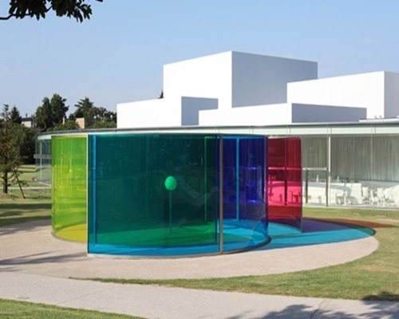
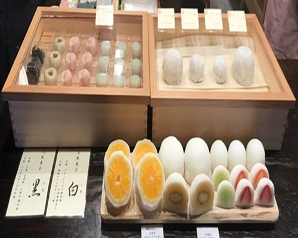
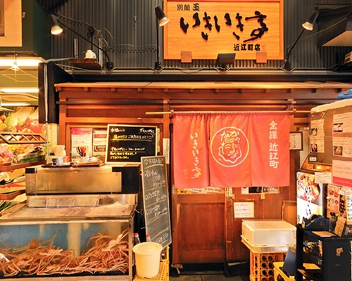
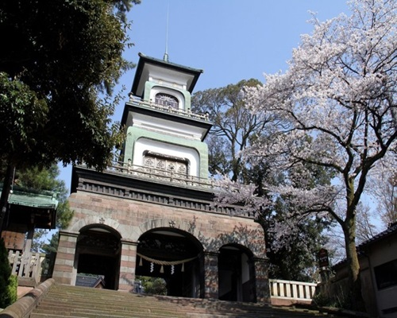
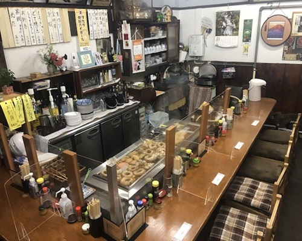
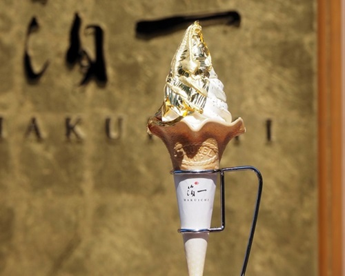
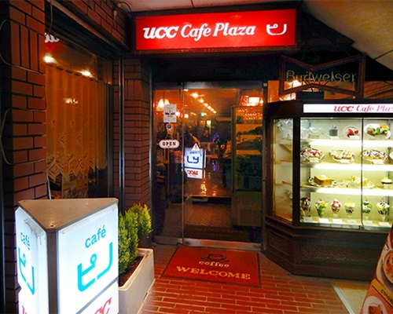
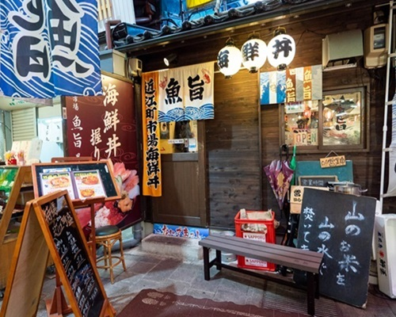

スタンプを集めて景品をもらおう!!
| 21世紀美術館 | 菓舗Kazu Nakashima |
| いきいき亭 |  グリルオーツカ グリルオーツカ |
| 尾山神社 | 菊一 |
| 兼六園 | 箔一 |
| ピノ | 魚旨 |
＜スタンプラリーのやり方！＞
- 観光地を設定しよう!
- ”カメラ起動”をクリック！
- 観光地に設置されたQRコードを読み取り、ポイントを獲得！！
- 集めたポイントで景品と交換しよう！
<観光地の設定>
観光地を10個設定してね！
まるびぃ（金沢21世紀美術館）
近江町市場
兼六園
ひがし茶屋街
金沢城
湯涌温泉
尾山神社
国立工芸館
志摩
妙立寺
主計町茶屋街
長町武家屋敷
JR金沢駅
玉泉園
玉泉院丸庭園
浅野川大橋
景品交換ページはこちらから
リンク
リンク